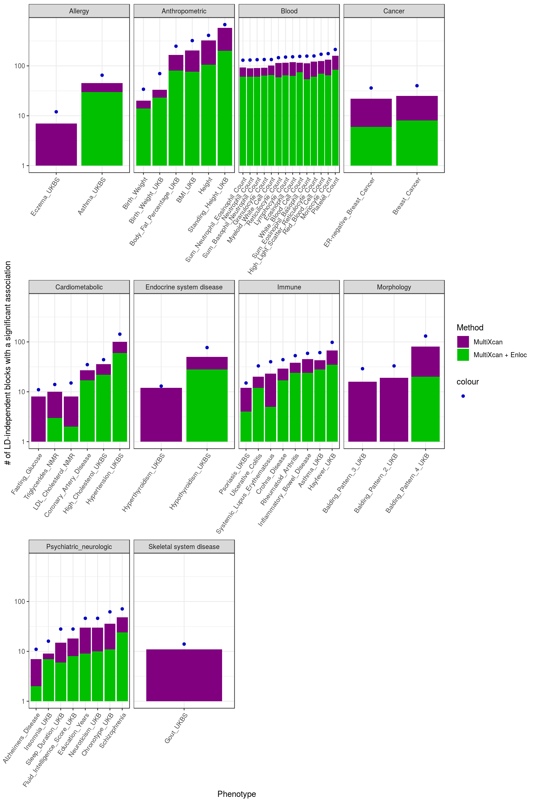
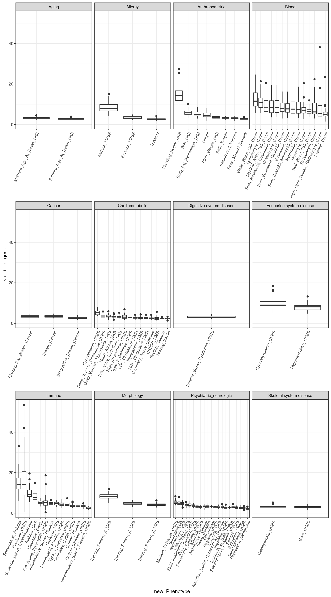
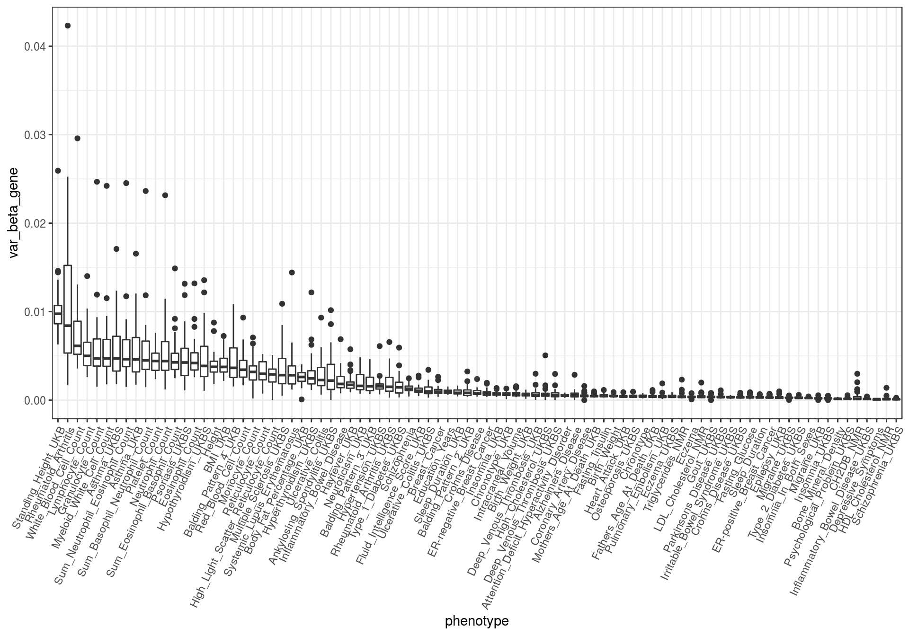

Last updated: 2019-04-02
Checks: 5 1
Knit directory: gtex-gwas-analysis/
This reproducible R Markdown analysis was created with workflowr (version 1.2.0). The Report tab describes the reproducibility checks that were applied when the results were created. The Past versions tab lists the development history.
The R Markdown file has unstaged changes. To know which version of the R Markdown file created these results, you’ll want to first commit it to the Git repo. If you’re still working on the analysis, you can ignore this warning. When you’re finished, you can run wflow_publish to commit the R Markdown file and build the HTML.
Great job! The global environment was empty. Objects defined in the global environment can affect the analysis in your R Markdown file in unknown ways. For reproduciblity it’s best to always run the code in an empty environment.
The command set.seed(20190312) was run prior to running the code in the R Markdown file. Setting a seed ensures that any results that rely on randomness, e.g. subsampling or permutations, are reproducible.
Great job! Recording the operating system, R version, and package versions is critical for reproducibility.
Nice! There were no cached chunks for this analysis, so you can be confident that you successfully produced the results during this run.
Great! You are using Git for version control. Tracking code development and connecting the code version to the results is critical for reproducibility. The version displayed above was the version of the Git repository at the time these results were generated.
Note that you need to be careful to ensure that all relevant files for the analysis have been committed to Git prior to generating the results (you can use wflow_publish or wflow_git_commit). workflowr only checks the R Markdown file, but you know if there are other scripts or data files that it depends on. Below is the status of the Git repository when the results were generated:
Ignored files:
Ignored: .Rproj.user/
Ignored: .httr-oauth
Ignored: code/.httr-oauth
Untracked files:
Untracked: code/lmm.R
Untracked: data/dapg_variants/
Untracked: docs.zip
Untracked: docs/docs.zip
Untracked: docs/miscellaneous_statistics.pdf
Untracked: output/beta_gene_variance.rds
Untracked: output/counts_per_ld_block.csv
Untracked: output/gwas_counts_per_ldblock.rds
Untracked: output/lmm/
Untracked: var_gamma.R
Unstaged changes:
Modified: analysis/gwas_catalog.Rmd
Modified: analysis/miscellaneous_statistics.Rmd
Note that any generated files, e.g. HTML, png, CSS, etc., are not included in this status report because it is ok for generated content to have uncommitted changes.
These are the previous versions of the R Markdown and HTML files. If you’ve configured a remote Git repository (see ?wflow_git_remote), click on the hyperlinks in the table below to view them.
| File | Version | Author | Date | Message |
|---|---|---|---|---|
| Rmd | 0c141d5 | rbonazzola | 2019-03-26 | removed references to other repositories |
| html | 0c141d5 | rbonazzola | 2019-03-26 | removed references to other repositories |
| Rmd | 4581a3a | rbonazzola | 2019-03-22 | minor updates |
| html | 4581a3a | rbonazzola | 2019-03-22 | minor updates |
| Rmd | 20eaab5 | rbonazzola | 2019-03-22 | changes to plot of # of associated loci |
| html | 20eaab5 | rbonazzola | 2019-03-22 | changes to plot of # of associated loci |
| Rmd | e23b054 | rbonazzola | 2019-03-19 | Match ENLOC-colocalized loci by gene |
| html | e23b054 | rbonazzola | 2019-03-19 | Match ENLOC-colocalized loci by gene |
| Rmd | 305d850 | rbonazzola | 2019-03-15 | added html |
| html | 305d850 | rbonazzola | 2019-03-15 | added html |
| Rmd | 815c951 | rbonazzola | 2019-03-14 | updates |
| Rmd | 31378dc | rbonazzola | 2019-03-13 | updates |
| html | 31378dc | rbonazzola | 2019-03-13 | updates |
| Rmd | c58009d | rbonazzola | 2019-03-13 | miscellaneous statistics |
| tle: “Miscellaneous statistics for the GTEx-GWAS paper” |
| tput: |
| html_document: default |
| pdf_document: default |
Import libraries and source scripts
# install.packages("bigrquery")
suppressPackageStartupMessages(library(bigrquery))
# Script with ancillary functions to perform queries to BigQuery
suppressPackageStartupMessages(source("code/BigQuery.R", chdir = TRUE))Select phenotypes without deflation after imputation
NO_DEFLATION <- 0
STRONG_DEFLATION <- 1
MILD_DEFLATION <- 2
query <- glue::glue("SELECT Tag as phenotype, Deflation
FROM {gwas_metadata_tbl$dataset_name}.{gwas_metadata_tbl$table_name}")
gwas_deflation_status <- query_exec(query, gwas_metadata_tbl$project)0 bytes processedselected_phenotypes <- gwas_deflation_status %>% filter(Deflation == NO_DEFLATION) %>% .[,1]
strong_deflation_phenotypes <- gwas_deflation_status %>% filter(Deflation == STRONG_DEFLATION) %>% .[,1]
mild_deflation_phenotypes <- gwas_deflation_status %>% filter(Deflation == MILD_DEFLATION) %>% .[,1]
gwas_metadata <- gtex_gwas_metadata() %>%
rename(phenotype="Tag") %>%
select(phenotype, new_Phenotype, Category, Deflation)0 bytes processedgtex_tissue_metadata <- basicQuery(gtex_tissue_metadata_tbl) %>%
select(tissue, v8_all, tissue_abbrv) %>%
rename(sample_size=v8_all)0 bytes processed87 phenotypes were selected for analysis. From the rest, 23 GWAS showed strong deflation after imputation, whereas 4 presented mild deflation.
PrediXcan and MultiXcan
0 bytes processed
0 bytes processed- 21627 genes are being tested by MultiXcan.
0 bytes processed- 281749 (gene, tissue) pairs are being tested by PrediXcan.
0 bytes processed0 bytes processed'data.frame': 114 obs. of 5 variables:
$ phenotype : chr "UKB_20002_1464_self_reported_rheumatoid_arthritis" "GLGC_Mc_TG" "Astle_et_al_2016_Sum_basophil_neutrophil_counts" "UKB_2395_4_Hair_or_balding_pattern_Pattern_4" ...
$ best_pvalue: num 3.63e-115 1.95e-218 2.45e-270 1.76e-114 2.39e-118 ...
$ n_genes : int 21627 21627 21627 21627 21618 21627 21627 21627 21623 21627 ...
$ pvalue_thr : num 2.31e-06 2.31e-06 2.31e-06 2.31e-06 2.31e-06 ...
$ Deflation : int 0 1 0 0 0 1 0 0 0 1 ...78 traits have at least one gene significantly associated (according to MultiXcan).
0 bytes processed'data.frame': 114 obs. of 5 variables:
$ phenotype : chr "UKB_20002_1452_self_reported_eczema_or_dermatitis" "UKB_20002_1265_self_reported_migraine" "EGG_BMI_HapMapImputed" "MAGNETIC_HDL.C" ...
$ best_pvalue : num 2.37e-28 1.30e-22 7.04e-18 2.80e-99 1.82e-68 ...
$ n_tissues_genes: int 281745 281745 281746 281721 281745 281745 281411 281618 281745 281745 ...
$ pvalue_thr : num 1.77e-07 1.77e-07 1.77e-07 1.77e-07 1.77e-07 ...
$ Deflation : int 0 0 1 0 0 0 0 1 0 0 ...75 traits have at least one gene significantly associated in some tissue (according to PrediXcan).
PrediXcan and colocalization methods
How many among PrediXcan-significant are Coloc-colocalized?
0 bytes processed'data.frame': 117978 obs. of 5 variables:
$ phenotype: chr "pgc.scz2" "pgc.scz2" "pgc.scz2" "pgc.scz2" ...
$ tissue : chr "Brain_Spinal_cord_cervical_c-1" "Spleen" "Brain_Cerebellar_Hemisphere" "Skin_Sun_Exposed_Lower_leg" ...
$ gene : chr "ENSG00000064726.9" "ENSG00000100410.7" "ENSG00000101213.6" "ENSG00000101442.9" ...
$ pvalue : num 5.27e-08 1.98e-09 1.08e-08 5.79e-09 1.60e-08 ...
$ P4 : num 6.43e-03 6.51e-02 2.77e-01 2.23e-05 5.61e-03 ...1379 out of 6854 (20.12%)
What if restricting to protein-coding genes?
'data.frame': 107704 obs. of 6 variables:
$ phenotype: chr "pgc.scz2" "pgc.scz2" "pgc.scz2" "pgc.scz2" ...
$ tissue : chr "Brain_Spinal_cord_cervical_c-1" "Spleen" "Brain_Cerebellar_Hemisphere" "Skin_Sun_Exposed_Lower_leg" ...
$ gene : chr "ENSG00000064726" "ENSG00000100410" "ENSG00000101213" "ENSG00000101442" ...
$ pvalue : num 5.27e-08 1.98e-09 1.08e-08 5.79e-09 1.60e-08 ...
$ P4 : num 6.43e-03 6.51e-02 2.77e-01 2.23e-05 5.61e-03 ...
$ gene_type: chr "protein_coding" "protein_coding" "protein_coding" "protein_coding" ...1253 out of 6119 (20.48%)
How many among PrediXcan-significant are Enloc-colocalized?
0 bytes processed'data.frame': 201488 obs. of 5 variables:
$ phenotype: chr "pgc.scz2" "pgc.scz2" "pgc.scz2" "pgc.scz2" ...
$ tissue : chr "Brain_Spinal_cord_cervical_c-1" "Brain_Cerebellar_Hemisphere" "Brain_Cerebellar_Hemisphere" "Brain_Cerebellar_Hemisphere" ...
$ gene : chr "ENSG00000064726.9" "ENSG00000101213.6" "ENSG00000101213.6" "ENSG00000101213.6" ...
$ pvalue : num 5.27e-08 1.08e-08 1.08e-08 1.08e-08 1.60e-08 ...
$ rcp : num 0 0.593 0 0.114 0.008 0.008 0 0.006 0 0.001 ...1300 out of 6854 (18.97%)
What if restricting to protein-coding genes?
'data.frame': 182188 obs. of 6 variables:
$ phenotype: chr "pgc.scz2" "pgc.scz2" "pgc.scz2" "pgc.scz2" ...
$ tissue : chr "Brain_Spinal_cord_cervical_c-1" "Brain_Cerebellar_Hemisphere" "Brain_Cerebellar_Hemisphere" "Brain_Cerebellar_Hemisphere" ...
$ gene : chr "ENSG00000064726" "ENSG00000101213" "ENSG00000101213" "ENSG00000101213" ...
$ pvalue : num 5.27e-08 1.08e-08 1.08e-08 1.08e-08 1.60e-08 ...
$ rcp : num 0 0.593 0 0.114 0.008 0.008 0 0.006 0 0.001 ...
$ gene_type: chr "protein_coding" "protein_coding" "protein_coding" "protein_coding" ...1173 out of 6119 (19.169799%)
How many among Coloc-colocalized genes are PrediXcan-significant?
0 bytes processed'data.frame': 19729 obs. of 5 variables:
$ phenotype: chr "pgc.scz2" "pgc.scz2" "pgc.scz2" "pgc.scz2" ...
$ tissue : chr "Artery_Tibial" "Prostate" "Brain_Cerebellar_Hemisphere" "Brain_Cerebellum" ...
$ gene : chr "ENSG00000121152.9" "ENSG00000130427.2" "ENSG00000143641.9" "ENSG00000143641.9" ...
$ pvalue : num 2.21e-03 7.11e-02 2.56e-04 1.83e-04 8.14e-05 ...
$ P4 : num 0.591 0.517 0.906 0.914 0.552 ...2532 out of 2599 (97.42%)
How many among Enloc-colocalized genes are PrediXcan-significant?
0 bytes processed'data.frame': 25281 obs. of 5 variables:
$ phenotype: chr "pgc.scz2" "pgc.scz2" "pgc.scz2" "pgc.scz2" ...
$ tissue : chr "Brain_Cerebellar_Hemisphere" "Brain_Caudate_basal_ganglia" "Brain_Cerebellum" "Artery_Tibial" ...
$ gene : chr "ENSG00000101213.6" "ENSG00000101213.6" "ENSG00000101213.6" "ENSG00000101213.6" ...
$ pvalue : num 1.08e-08 5.60e-06 5.22e-06 2.08e-03 7.65e-01 ...
$ rcp : num 0.593 0.741 0.922 0.708 0.824 0.698 0.554 0.933 0.94 0.503 ...3014 out of 3401 (88.62%)
How many among Enloc-colocalized genes are Coloc-colocalized?
0 bytes processed'data.frame': 41127 obs. of 5 variables:
$ phenotype: chr "pgc.scz2" "pgc.scz2" "pgc.scz2" "pgc.scz2" ...
$ tissue : chr "Brain_Cerebellar_Hemisphere" "Brain_Anterior_cingulate_cortex_BA24" "Artery_Tibial" "Brain_Caudate_basal_ganglia" ...
$ gene : chr "ENSG00000101213.6" "ENSG00000101213.6" "ENSG00000101213.6" "ENSG00000101213.6" ...
$ P4 : num 2.77e-01 2.35e-01 3.55e-05 1.48e-04 2.11e-01 ...
$ rcp : num 0.593 0.816 0.708 0.741 0.669 0.922 0.924 0.824 0.698 0.581 ...2571 out of 5127 (50.15%)
How many loci with GWAS hits also contain a significant gene-level association?
# for the script to generate the file below, see ../code/count_gwas_vs_predixcan_hits.R
counts.per.ldblock <- readRDS("output/counts_per_ldblock_gwas_mx_and_enloc.rds")
# set levels so that phenotypes are displayed ordered according to the number of GWAS loci.
ordered_phenotypes <- counts.per.ldblock %>% arrange(gwas_counts) %>% select(phenotype, new_Phenotype, abbreviation)
counts.per.ldblock$phenotype <- factor(as.character(counts.per.ldblock$phenotype), levels = ordered_phenotypes$phenotype)
counts.per.ldblock$new_Phenotype <- factor(as.character(counts.per.ldblock$new_Phenotype), levels = ordered_phenotypes$new_Phenotype)
counts.per.ldblock$abbreviation <- factor(as.character(counts.per.ldblock$abbreviation), levels = ordered_phenotypes$abbreviation)
str(counts.per.ldblock)Classes 'tbl_df', 'tbl' and 'data.frame': 82 obs. of 8 variables:
$ phenotype : Factor w/ 82 levels "CNCR_Insomnia_all",..: 72 67 75 71 77 68 64 78 76 70 ...
$ gwas_counts : int 152 134 158 150 176 134 131 213 171 146 ...
$ gwas_mx_counts : num 119 92 121 116 133 101 89 159 125 114 ...
$ gwas_mx_enloc_counts_gene: num 63 64 61 65 65 66 61 84 70 59 ...
$ new_Phenotype : Factor w/ 82 levels "Insomnia_In_Both_Sexes",..: 72 67 75 71 77 68 64 78 76 70 ...
$ abbreviation : Factor w/ 82 levels "NSL","INV","GFA",..: 72 67 75 71 77 68 64 78 76 70 ...
$ Category : chr "Blood" "Blood" "Blood" "Blood" ...
$ Deflation : int 0 0 0 0 0 0 0 0 0 0 ...
- attr(*, "gwas_pval_thr")= num 6.25e-09
- attr(*, "mx_pval_thr")= num 2.31e-06
- attr(*, "rcp_thr")= num 0.5cols <- c("GWAS"="#0000C0", "MultiXcan"="#800080", "MultiXcan + Enloc"="#00C000")The following plots represent:
- The number of Pickrell regions with a GWAS hit (a proxy for the number of independent GWAS signals). The p-value threshold used was 0.05/8000000.
- Among those, the ones with a MultiXcan-significant gene. The p-value threshold used was 0.05/21631.
- The number of regions with a gene that is both MultiXcan-significant and Enloc-colocalized. The threshold for Enloc’s RCP was 0.5
Warning: Transformation introduced infinite values in continuous y-axisWarning: Removed 2 rows containing missing values (geom_bar).
The same, but by trait category:
Warning: Transformation introduced infinite values in continuous y-axisWarning: Removed 2 rows containing missing values (geom_bar).
Do primary eQTLs have larger effect on complex traits than secondary eQTLs?
t-tests were performed for each (tissue, trait) pair:
Warning: Column `tissue` joining factor and character vector, coercing into
character vectorWarning: Column `phenotype` joining factor and character vector, coercing
into character vectorggp1 <- ggplot(df, aes(x=tissue, y=-log10(t.test_pvalue))) +
geom_boxplot() +
theme_bw() + theme(axis.text.x = element_text(angle = 60, hjust = 1))
ggp1
| Version | Author | Date |
|---|---|---|
| e23b054 | rbonazzola | 2019-03-19 |
ggp2 <- ggp1 + facet_grid(Category ~ .)
ggp2
| Version | Author | Date |
|---|---|---|
| e23b054 | rbonazzola | 2019-03-19 |
# ggp2 <- ggplot(df, aes(x=phenotype, y=-log10(t.test_pvalue))) + geom_boxplot() + theme_bw() + theme(axis.text.x = element_text(angle = 60, hjust = 1))
ggp3 <- ggplot(df, aes(x=new_Phenotype, y=-log10(t.test_pvalue))) +
geom_boxplot() +
theme_bw() + theme(axis.text.x = element_text(angle = 60, hjust = 1))
ggp3
| Version | Author | Date |
|---|---|---|
| e23b054 | rbonazzola | 2019-03-19 |
ggp4 <- ggp3 + facet_wrap(Category ~ ., drop = T, scales="free_x", nrow = 3)
ggp4
| Version | Author | Date |
|---|---|---|
| e23b054 | rbonazzola | 2019-03-19 |
How does variance of gene effects vary across traits?
beta_gene_variance_df <- readRDS("output/beta_gene_variance.rds")
beta_gene_variance_df <- beta_gene_variance_df %>% mutate(beta_gene_var_norm=var_beta_gene/var_delta)
phenotype <- beta_gene_variance_df %>% group_by(phenotype) %>% summarise(median(var_beta_gene)) %>% inner_join(gwas_metadata %>% select(-Deflation), by="phenotype")
beta_gene_variance_df <- beta_gene_variance_df %>% inner_join(gwas_metadata, by="phenotype") %>% inner_join(gtex_tissue_metadata, by="tissue") %>% rename(n_samples_gtex=sample_size)
beta_gene_variance_df$phenotype <- factor(beta_gene_variance_df$phenotype, levels = phenotype[order(-phenotype$`median(var_beta_gene)`), "phenotype"]$phenotype)
beta_gene_variance_df$new_Phenotype <- factor(beta_gene_variance_df$new_Phenotype, levels = phenotype[order(-phenotype$`median(var_beta_gene)`), "new_Phenotype"]$new_Phenotype)
ggp <- ggplot(beta_gene_variance_df, aes(x=new_Phenotype, y=var_beta_gene))
ggp <- ggp + geom_boxplot() + theme_bw()
ggp <- ggp + theme(axis.text.x=element_text(angle=65, hjust = 1))ggp
ggp <- ggp + facet_wrap(Category ~ ., drop = T, scales="free_x", nrow = 3)
ggp
knitr::kable(beta_gene_variance_df %>% select(phenotype, tissue, var_beta_gene) %>% group_by(phenotype) %>% top_n(3, wt=var_beta_gene) %>% dplyr::arrange(phenotype, -var_beta_gene))| phenotype | tissue | var_beta_gene |
|---|---|---|
| UKB_50_Standing_height | Muscle_Skeletal | 27.447399 |
| UKB_50_Standing_height | Whole_Blood | 25.515106 |
| UKB_50_Standing_height | Skin_Not_Sun_Exposed_Suprapubic | 21.489340 |
| RA_OKADA_TRANS_ETHNIC | Liver | 33.094686 |
| RA_OKADA_TRANS_ETHNIC | Lung | 24.229426 |
| RA_OKADA_TRANS_ETHNIC | Colon_Transverse | 23.844513 |
| UKB_20002_1453_self_reported_psoriasis | Whole_Blood | 53.467290 |
| UKB_20002_1453_self_reported_psoriasis | Brain_Cerebellar_Hemisphere | 42.082596 |
| UKB_20002_1453_self_reported_psoriasis | Small_Intestine_Terminal_Ileum | 37.522483 |
| Astle_et_al_2016_White_blood_cell_count | Whole_Blood | 24.689878 |
| Astle_et_al_2016_White_blood_cell_count | Muscle_Skeletal | 21.377191 |
| Astle_et_al_2016_White_blood_cell_count | Stomach | 20.930853 |
| Astle_et_al_2016_Lymphocyte_counts | Whole_Blood | 21.340934 |
| Astle_et_al_2016_Lymphocyte_counts | Muscle_Skeletal | 19.818309 |
| Astle_et_al_2016_Lymphocyte_counts | Skin_Sun_Exposed_Lower_leg | 18.402442 |
| IMMUNOBASE_Systemic_lupus_erythematosus_hg19 | Muscle_Skeletal | 19.615621 |
| IMMUNOBASE_Systemic_lupus_erythematosus_hg19 | Whole_Blood | 16.785599 |
| IMMUNOBASE_Systemic_lupus_erythematosus_hg19 | Prostate | 14.857546 |
| UKB_20002_1225_self_reported_hyperthyroidism_or_thyrotoxicosis | Muscle_Skeletal | 18.407968 |
| UKB_20002_1225_self_reported_hyperthyroidism_or_thyrotoxicosis | Whole_Blood | 16.600566 |
| UKB_20002_1225_self_reported_hyperthyroidism_or_thyrotoxicosis | Stomach | 15.919495 |
| Astle_et_al_2016_Myeloid_white_cell_count | Whole_Blood | 20.427383 |
| Astle_et_al_2016_Myeloid_white_cell_count | Stomach | 16.747439 |
| Astle_et_al_2016_Myeloid_white_cell_count | Muscle_Skeletal | 15.489826 |
| Astle_et_al_2016_Sum_neutrophil_eosinophil_counts | Whole_Blood | 19.569398 |
| Astle_et_al_2016_Sum_neutrophil_eosinophil_counts | Stomach | 16.139897 |
| Astle_et_al_2016_Sum_neutrophil_eosinophil_counts | Muscle_Skeletal | 13.831451 |
| Astle_et_al_2016_Granulocyte_count | Whole_Blood | 19.617413 |
| Astle_et_al_2016_Granulocyte_count | Stomach | 16.156012 |
| Astle_et_al_2016_Granulocyte_count | Muscle_Skeletal | 13.975817 |
| UKB_2395_4_Hair_or_balding_pattern_Pattern_4 | Whole_Blood | 11.907135 |
| UKB_2395_4_Hair_or_balding_pattern_Pattern_4 | Liver | 10.811622 |
| UKB_2395_4_Hair_or_balding_pattern_Pattern_4 | Adipose_Visceral_Omentum | 10.594109 |
| UKB_20002_1226_self_reported_hypothyroidism_or_myxoedema | Whole_Blood | 13.248966 |
| UKB_20002_1226_self_reported_hypothyroidism_or_myxoedema | Colon_Transverse | 11.579163 |
| UKB_20002_1226_self_reported_hypothyroidism_or_myxoedema | Small_Intestine_Terminal_Ileum | 10.554512 |
| Astle_et_al_2016_Sum_eosinophil_basophil_counts | Whole_Blood | 16.311589 |
| Astle_et_al_2016_Sum_eosinophil_basophil_counts | Muscle_Skeletal | 14.449964 |
| Astle_et_al_2016_Sum_eosinophil_basophil_counts | Heart_Left_Ventricle | 13.966365 |
| UKB_6152_8_diagnosed_by_doctor_Asthma | Whole_Blood | 14.792569 |
| UKB_6152_8_diagnosed_by_doctor_Asthma | Muscle_Skeletal | 13.619661 |
| UKB_6152_8_diagnosed_by_doctor_Asthma | Esophagus_Muscularis | 10.904941 |
| UKB_20002_1111_self_reported_asthma | Whole_Blood | 15.050839 |
| UKB_20002_1111_self_reported_asthma | Muscle_Skeletal | 14.067499 |
| UKB_20002_1111_self_reported_asthma | Esophagus_Muscularis | 11.275903 |
| Astle_et_al_2016_Eosinophil_counts | Whole_Blood | 16.293716 |
| Astle_et_al_2016_Eosinophil_counts | Heart_Left_Ventricle | 13.522357 |
| Astle_et_al_2016_Eosinophil_counts | Muscle_Skeletal | 13.052808 |
| Astle_et_al_2016_Sum_basophil_neutrophil_counts | Whole_Blood | 18.816929 |
| Astle_et_al_2016_Sum_basophil_neutrophil_counts | Stomach | 15.258409 |
| Astle_et_al_2016_Sum_basophil_neutrophil_counts | Breast_Mammary_Tissue | 13.798228 |
| Astle_et_al_2016_Neutrophil_count | Whole_Blood | 18.725189 |
| Astle_et_al_2016_Neutrophil_count | Stomach | 14.916600 |
| Astle_et_al_2016_Neutrophil_count | Colon_Transverse | 13.488346 |
| Astle_et_al_2016_Monocyte_count | Whole_Blood | 20.412186 |
| Astle_et_al_2016_Monocyte_count | Skin_Sun_Exposed_Lower_leg | 13.483887 |
| Astle_et_al_2016_Monocyte_count | Muscle_Skeletal | 13.356227 |
| Astle_et_al_2016_Red_blood_cell_count | Heart_Left_Ventricle | 11.902580 |
| Astle_et_al_2016_Red_blood_cell_count | Whole_Blood | 10.333734 |
| Astle_et_al_2016_Red_blood_cell_count | Cells_Cultured_fibroblasts | 9.212500 |
| Astle_et_al_2016_Reticulocyte_count | Whole_Blood | 22.430165 |
| Astle_et_al_2016_Reticulocyte_count | Skin_Sun_Exposed_Lower_leg | 18.466503 |
| Astle_et_al_2016_Reticulocyte_count | Muscle_Skeletal | 15.907128 |
| UKB_21001_Body_mass_index_BMI | Whole_Blood | 10.044934 |
| UKB_21001_Body_mass_index_BMI | Muscle_Skeletal | 8.828332 |
| UKB_21001_Body_mass_index_BMI | Skin_Not_Sun_Exposed_Suprapubic | 8.434758 |
| UKB_20002_1261_self_reported_multiple_sclerosis | Vagina | 8.388410 |
| UKB_20002_1261_self_reported_multiple_sclerosis | Colon_Transverse | 7.706027 |
| UKB_20002_1261_self_reported_multiple_sclerosis | Thyroid | 7.661526 |
| Astle_et_al_2016_High_light_scatter_reticulocyte_count | Whole_Blood | 38.136807 |
| Astle_et_al_2016_High_light_scatter_reticulocyte_count | Skin_Sun_Exposed_Lower_leg | 17.927517 |
| Astle_et_al_2016_High_light_scatter_reticulocyte_count | Skin_Not_Sun_Exposed_Suprapubic | 14.862566 |
| IBD.EUR.Ulcerative_Colitis | Whole_Blood | 7.479607 |
| IBD.EUR.Ulcerative_Colitis | Breast_Mammary_Tissue | 7.194471 |
| IBD.EUR.Ulcerative_Colitis | Liver | 6.949490 |
| UKB_20002_1065_self_reported_hypertension | Adrenal_Gland | 8.163386 |
| UKB_20002_1065_self_reported_hypertension | Stomach | 7.057105 |
| UKB_20002_1065_self_reported_hypertension | Adipose_Subcutaneous | 6.986792 |
| UKB_20002_1313_self_reported_ankylosing_spondylitis | Artery_Aorta | 18.659336 |
| UKB_20002_1313_self_reported_ankylosing_spondylitis | Brain_Nucleus_accumbens_basal_ganglia | 14.349106 |
| UKB_20002_1313_self_reported_ankylosing_spondylitis | Adipose_Visceral_Omentum | 8.901364 |
| Astle_et_al_2016_Platelet_count | Whole_Blood | 23.449812 |
| Astle_et_al_2016_Platelet_count | Stomach | 9.587053 |
| Astle_et_al_2016_Platelet_count | Cells_EBV-transformed_lymphocytes | 9.034005 |
| UKB_23099_Body_fat_percentage | Muscle_Skeletal | 8.811913 |
| UKB_23099_Body_fat_percentage | Whole_Blood | 8.761309 |
| UKB_23099_Body_fat_percentage | Heart_Left_Ventricle | 7.477739 |
| UKB_2395_3_Hair_or_balding_pattern_Pattern_3 | Adipose_Visceral_Omentum | 6.404750 |
| UKB_2395_3_Hair_or_balding_pattern_Pattern_3 | Lung | 6.131923 |
| UKB_2395_3_Hair_or_balding_pattern_Pattern_3 | Brain_Hippocampus | 5.901512 |
| pgc.scz2 | Whole_Blood | 8.097073 |
| pgc.scz2 | Prostate | 7.136594 |
| pgc.scz2 | Muscle_Skeletal | 6.872414 |
| IBD.EUR.Inflammatory_Bowel_Disease | Liver | 6.671259 |
| IBD.EUR.Inflammatory_Bowel_Disease | Breast_Mammary_Tissue | 6.659473 |
| IBD.EUR.Inflammatory_Bowel_Disease | Whole_Blood | 6.164480 |
| UKB_20127_Neuroticism_score | Liver | 6.568563 |
| UKB_20127_Neuroticism_score | Esophagus_Mucosa | 6.488819 |
| UKB_20127_Neuroticism_score | Whole_Blood | 6.314211 |
| UKB_6152_9_diagnosed_by_doctor_Hayfever_allergic_rhinitis_or_eczema | Breast_Mammary_Tissue | 6.320831 |
| UKB_6152_9_diagnosed_by_doctor_Hayfever_allergic_rhinitis_or_eczema | Whole_Blood | 6.283804 |
| UKB_6152_9_diagnosed_by_doctor_Hayfever_allergic_rhinitis_or_eczema | Colon_Sigmoid | 6.085690 |
| UKB_20002_1464_self_reported_rheumatoid_arthritis | Liver | 6.869270 |
| UKB_20002_1464_self_reported_rheumatoid_arthritis | Lung | 6.800674 |
| UKB_20002_1464_self_reported_rheumatoid_arthritis | Artery_Coronary | 6.621934 |
| UKB_20002_1222_self_reported_type_1_diabetes | Whole_Blood | 7.310570 |
| UKB_20002_1222_self_reported_type_1_diabetes | Colon_Transverse | 6.275003 |
| UKB_20002_1222_self_reported_type_1_diabetes | Muscle_Skeletal | 6.059662 |
| GIANT_HEIGHT | Cells_EBV-transformed_lymphocytes | 8.147819 |
| GIANT_HEIGHT | Muscle_Skeletal | 7.155290 |
| GIANT_HEIGHT | Cells_Cultured_fibroblasts | 6.913823 |
| UKB_2395_2_Hair_or_balding_pattern_Pattern_2 | Muscle_Skeletal | 6.261567 |
| UKB_2395_2_Hair_or_balding_pattern_Pattern_2 | Prostate | 5.381535 |
| UKB_2395_2_Hair_or_balding_pattern_Pattern_2 | Small_Intestine_Terminal_Ileum | 5.295177 |
| UKB_1180_Morning_or_evening_person_chronotype | Vagina | 5.513801 |
| UKB_1180_Morning_or_evening_person_chronotype | Cells_Cultured_fibroblasts | 5.317370 |
| UKB_1180_Morning_or_evening_person_chronotype | Artery_Tibial | 4.753328 |
| UKB_20016_Fluid_intelligence_score | Muscle_Skeletal | 5.890883 |
| UKB_20016_Fluid_intelligence_score | Whole_Blood | 5.794202 |
| UKB_20016_Fluid_intelligence_score | Lung | 5.351187 |
| UKB_20002_1463_self_reported_ulcerative_colitis | Heart_Left_Ventricle | 5.711334 |
| UKB_20002_1463_self_reported_ulcerative_colitis | Whole_Blood | 5.254983 |
| UKB_20002_1463_self_reported_ulcerative_colitis | Muscle_Skeletal | 4.838700 |
| UKB_20002_1094_self_reported_deep_venous_thrombosis_dvt | Heart_Left_Ventricle | 5.835756 |
| UKB_20002_1094_self_reported_deep_venous_thrombosis_dvt | Muscle_Skeletal | 5.258580 |
| UKB_20002_1094_self_reported_deep_venous_thrombosis_dvt | Liver | 4.750547 |
| UKB_1160_Sleep_duration | Vagina | 5.031064 |
| UKB_1160_Sleep_duration | Stomach | 4.831153 |
| UKB_1160_Sleep_duration | Colon_Transverse | 4.773904 |
| UKB_6152_5_diagnosed_by_doctor_Blood_clot_in_the_leg_DVT | Heart_Left_Ventricle | 5.903218 |
| UKB_6152_5_diagnosed_by_doctor_Blood_clot_in_the_leg_DVT | Muscle_Skeletal | 5.102122 |
| UKB_6152_5_diagnosed_by_doctor_Blood_clot_in_the_leg_DVT | Liver | 4.889572 |
| UKB_20022_Birth_weight | Liver | 4.618933 |
| UKB_20022_Birth_weight | Esophagus_Muscularis | 4.602974 |
| UKB_20022_Birth_weight | Muscle_Skeletal | 4.573499 |
| IBD.EUR.Crohns_Disease | Muscle_Skeletal | 4.819357 |
| IBD.EUR.Crohns_Disease | Esophagus_Mucosa | 4.694477 |
| IBD.EUR.Crohns_Disease | Adipose_Visceral_Omentum | 4.466789 |
| UKB_6150_1_Vascular_or_heart_problems_diagnosed_by_doctor_Heart_attack | Heart_Left_Ventricle | 4.940254 |
| UKB_6150_1_Vascular_or_heart_problems_diagnosed_by_doctor_Heart_attack | Heart_Atrial_Appendage | 4.592938 |
| UKB_6150_1_Vascular_or_heart_problems_diagnosed_by_doctor_Heart_attack | Prostate | 4.390772 |
| UKB_20002_1462_self_reported_crohns_disease | Liver | 4.845116 |
| UKB_20002_1462_self_reported_crohns_disease | Stomach | 4.679853 |
| UKB_20002_1462_self_reported_crohns_disease | Muscle_Skeletal | 4.161255 |
| BCAC_ER_negative_BreastCancer_EUR | Artery_Coronary | 4.775630 |
| BCAC_ER_negative_BreastCancer_EUR | Heart_Left_Ventricle | 4.554648 |
| BCAC_ER_negative_BreastCancer_EUR | Brain_Hippocampus | 4.496577 |
| BCAC_Overall_BreastCancer_EUR | Artery_Coronary | 4.809130 |
| BCAC_Overall_BreastCancer_EUR | Stomach | 4.570079 |
| BCAC_Overall_BreastCancer_EUR | Heart_Left_Ventricle | 4.486611 |
| UKB_6152_7_diagnosed_by_doctor_Blood_clot_in_the_lung | Colon_Transverse | 5.265264 |
| UKB_6152_7_diagnosed_by_doctor_Blood_clot_in_the_lung | Heart_Left_Ventricle | 4.440098 |
| UKB_6152_7_diagnosed_by_doctor_Blood_clot_in_the_lung | Adipose_Visceral_Omentum | 4.420214 |
| UKB_20002_1262_self_reported_parkinsons_disease | Breast_Mammary_Tissue | 4.253111 |
| UKB_20002_1262_self_reported_parkinsons_disease | Whole_Blood | 4.152555 |
| UKB_20002_1262_self_reported_parkinsons_disease | Heart_Left_Ventricle | 4.123666 |
| UKB_3526_Mothers_age_at_death | Liver | 4.509228 |
| UKB_3526_Mothers_age_at_death | Artery_Coronary | 4.102825 |
| UKB_3526_Mothers_age_at_death | Heart_Atrial_Appendage | 3.855538 |
| EGG_BW3_EUR | Colon_Transverse | 4.324384 |
| EGG_BW3_EUR | Brain_Nucleus_accumbens_basal_ganglia | 3.922344 |
| EGG_BW3_EUR | Lung | 3.843144 |
| UKB_G43_Diagnoses_main_ICD10_G43_Migraine | Colon_Transverse | 4.099626 |
| UKB_G43_Diagnoses_main_ICD10_G43_Migraine | Liver | 4.054718 |
| UKB_G43_Diagnoses_main_ICD10_G43_Migraine | Brain_Hippocampus | 4.044950 |
| IGAP_Alzheimer | Vagina | 4.451550 |
| IGAP_Alzheimer | Colon_Transverse | 4.266820 |
| IGAP_Alzheimer | Muscle_Skeletal | 4.215254 |
| Jones_et_al_2016_SleepDuration | Vagina | 4.799285 |
| Jones_et_al_2016_SleepDuration | Colon_Transverse | 4.089197 |
| Jones_et_al_2016_SleepDuration | Stomach | 4.081258 |
| UKB_20002_1309_self_reported_osteoporosis | Muscle_Skeletal | 5.263788 |
| UKB_20002_1309_self_reported_osteoporosis | Whole_Blood | 4.570564 |
| UKB_20002_1309_self_reported_osteoporosis | Heart_Left_Ventricle | 4.495018 |
| Jones_et_al_2016_Chronotype | Stomach | 4.209373 |
| Jones_et_al_2016_Chronotype | Heart_Left_Ventricle | 4.146870 |
| Jones_et_al_2016_Chronotype | Vagina | 3.941324 |
| UKB_20002_1452_self_reported_eczema_or_dermatitis | Liver | 4.978694 |
| UKB_20002_1452_self_reported_eczema_or_dermatitis | Whole_Blood | 4.975201 |
| UKB_20002_1452_self_reported_eczema_or_dermatitis | Heart_Left_Ventricle | 4.965926 |
| UKB_20002_1473_self_reported_high_cholesterol | Liver | 6.889638 |
| UKB_20002_1473_self_reported_high_cholesterol | Skin_Sun_Exposed_Lower_leg | 5.298513 |
| UKB_20002_1473_self_reported_high_cholesterol | Muscle_Skeletal | 5.175230 |
| UKB_20002_1154_self_reported_irritable_bowel_syndrome | Whole_Blood | 4.532095 |
| UKB_20002_1154_self_reported_irritable_bowel_syndrome | Lung | 4.474259 |
| UKB_20002_1154_self_reported_irritable_bowel_syndrome | Breast_Mammary_Tissue | 4.037176 |
| UKB_20002_1265_self_reported_migraine | Small_Intestine_Terminal_Ileum | 4.138744 |
| UKB_20002_1265_self_reported_migraine | Lung | 4.075644 |
| UKB_20002_1265_self_reported_migraine | Prostate | 3.768304 |
| UKB_1200_Sleeplessness_or_insomnia | Whole_Blood | 4.267723 |
| UKB_1200_Sleeplessness_or_insomnia | Prostate | 4.225253 |
| UKB_1200_Sleeplessness_or_insomnia | Skin_Not_Sun_Exposed_Suprapubic | 4.182966 |
| ENIGMA_Intracraneal_Volume | Small_Intestine_Terminal_Ileum | 4.228261 |
| ENIGMA_Intracraneal_Volume | Heart_Left_Ventricle | 4.218450 |
| ENIGMA_Intracraneal_Volume | Colon_Transverse | 4.030910 |
| PGC_ADHD_EUR_2017 | Prostate | 4.451113 |
| PGC_ADHD_EUR_2017 | Colon_Transverse | 3.901568 |
| PGC_ADHD_EUR_2017 | Breast_Mammary_Tissue | 3.686606 |
| GEFOS_Forearm | Liver | 3.862306 |
| GEFOS_Forearm | Brain_Nucleus_accumbens_basal_ganglia | 3.858061 |
| GEFOS_Forearm | Vagina | 3.745930 |
| UKB_20002_1223_self_reported_type_2_diabetes | Brain_Hypothalamus | 3.580333 |
| UKB_20002_1223_self_reported_type_2_diabetes | Liver | 3.516580 |
| UKB_20002_1223_self_reported_type_2_diabetes | Lung | 3.453447 |
| UKB_1807_Fathers_age_at_death | Whole_Blood | 3.931472 |
| UKB_1807_Fathers_age_at_death | Adipose_Visceral_Omentum | 3.756964 |
| UKB_1807_Fathers_age_at_death | Brain_Nucleus_accumbens_basal_ganglia | 3.596306 |
| UKB_20002_1466_self_reported_gout | Small_Intestine_Terminal_Ileum | 4.348667 |
| UKB_20002_1466_self_reported_gout | Muscle_Skeletal | 3.972523 |
| UKB_20002_1466_self_reported_gout | Whole_Blood | 3.935225 |
| UKB_20002_1616_self_reported_insomnia | Heart_Left_Ventricle | 4.235813 |
| UKB_20002_1616_self_reported_insomnia | Liver | 3.863648 |
| UKB_20002_1616_self_reported_insomnia | Stomach | 3.757809 |
| MAGNETIC_LDL.C | Liver | 4.204434 |
| MAGNETIC_LDL.C | Skin_Not_Sun_Exposed_Suprapubic | 3.813061 |
| MAGNETIC_LDL.C | Adipose_Subcutaneous | 3.622415 |
| CNCR_Insomnia_all | Brain_Hypothalamus | 3.672409 |
| CNCR_Insomnia_all | Brain_Nucleus_accumbens_basal_ganglia | 3.659924 |
| CNCR_Insomnia_all | Heart_Left_Ventricle | 3.647782 |
| UKB_20002_1243_self_reported_psychological_or_psychiatric_problem | Whole_Blood | 4.618263 |
| UKB_20002_1243_self_reported_psychological_or_psychiatric_problem | Stomach | 3.720309 |
| UKB_20002_1243_self_reported_psychological_or_psychiatric_problem | Brain_Hypothalamus | 3.501328 |
| MAGNETIC_IDL.TG | Liver | 4.406705 |
| MAGNETIC_IDL.TG | Stomach | 3.937357 |
| MAGNETIC_IDL.TG | Vagina | 3.738897 |
| BCAC_ER_positive_BreastCancer_EUR | Liver | 4.094604 |
| BCAC_ER_positive_BreastCancer_EUR | Vagina | 3.724907 |
| BCAC_ER_positive_BreastCancer_EUR | Stomach | 3.546594 |
| UKB_G40_Diagnoses_main_ICD10_G40_Epilepsy | Heart_Left_Ventricle | 3.776515 |
| UKB_G40_Diagnoses_main_ICD10_G40_Epilepsy | Whole_Blood | 3.660028 |
| UKB_G40_Diagnoses_main_ICD10_G40_Epilepsy | Prostate | 3.625332 |
| SSGAC_Education_Years_Pooled | Colon_Transverse | 4.072374 |
| SSGAC_Education_Years_Pooled | Muscle_Skeletal | 3.848316 |
| SSGAC_Education_Years_Pooled | Liver | 3.644341 |
| MAGNETIC_HDL.C | Small_Intestine_Terminal_Ileum | 4.279315 |
| MAGNETIC_HDL.C | Liver | 3.695414 |
| MAGNETIC_HDL.C | Brain_Hippocampus | 3.526420 |
| EAGLE_Eczema | Whole_Blood | 4.192058 |
| EAGLE_Eczema | Heart_Left_Ventricle | 3.539289 |
| EAGLE_Eczema | Prostate | 3.451089 |
| UKB_20002_1289_self_reported_schizophrenia | Whole_Blood | 3.644804 |
| UKB_20002_1289_self_reported_schizophrenia | Brain_Hypothalamus | 3.618472 |
| UKB_20002_1289_self_reported_schizophrenia | Colon_Transverse | 3.492403 |
| CARDIoGRAM_C4D_CAD_ADDITIVE | Muscle_Skeletal | 4.195514 |
| CARDIoGRAM_C4D_CAD_ADDITIVE | Liver | 4.101775 |
| CARDIoGRAM_C4D_CAD_ADDITIVE | Whole_Blood | 3.463331 |
| UKB_20002_1461_self_reported_inflammatory_bowel_disease | Muscle_Skeletal | 3.542794 |
| UKB_20002_1461_self_reported_inflammatory_bowel_disease | Brain_Nucleus_accumbens_basal_ganglia | 3.534541 |
| UKB_20002_1461_self_reported_inflammatory_bowel_disease | Liver | 3.523303 |
| MAGNETIC_CH2.DB.ratio | Minor_Salivary_Gland | 5.692151 |
| MAGNETIC_CH2.DB.ratio | Colon_Sigmoid | 4.207769 |
| MAGNETIC_CH2.DB.ratio | Whole_Blood | 4.154464 |
| MAGIC_FastingGlucose | Whole_Blood | 3.199428 |
| MAGIC_FastingGlucose | Stomach | 3.047545 |
| MAGIC_FastingGlucose | Small_Intestine_Terminal_Ileum | 2.951229 |
| SSGAC_Depressive_Symptoms | Vagina | 3.235891 |
| SSGAC_Depressive_Symptoms | Brain_Hypothalamus | 3.099512 |
| SSGAC_Depressive_Symptoms | Brain_Caudate_basal_ganglia | 2.994898 |
| MAGIC_ln_FastingInsulin | Prostate | 3.238471 |
| MAGIC_ln_FastingInsulin | Muscle_Skeletal | 3.011098 |
| MAGIC_ln_FastingInsulin | Colon_Transverse | 2.856781 |
Some observations:
- The tissue with largest \(\text{Var}(\beta_{\text{gene}})\) for the blood cell count traits is whole blood (except for red blood cells where it is heart left ventricle).
- The tissue with largest \(\text{Var}(\beta_{\text{gene}})\) for rheumatoid arthritis is liver. There is evidence of a connection between RA and liver damage.
- The values for height from GIANT are not reproduced in UKB.
Fraction of variance in GWAS effect size explained by variance in eQTL effect size
\[\delta_{\text{GWAS}}=\delta_0+\alpha\times \text{LDScore} + \beta_{\text{gene}}\times \gamma_{\text{eQTL}}+\epsilon\]
\[\text{Var}(\delta_{\text{GWAS}}-\alpha\times \text{LDScore}-\delta_0)=\text{Var}(\delta')=\underbrace{\text{Var}(\beta)\text{Var}(\gamma_{\text{eQTL}})}_{=:V}+\text{Var}(\epsilon)\] \[r:=\frac{V}{\text{Var}(\delta')}=1-\frac{\text{Var}(\epsilon)}{\text{Var}(\delta')}\]
beta_gene_variance_df_ <- readRDS("output/beta_gene_variance.rds")
phenotype <- beta_gene_variance_df_ %>%
group_by(phenotype) %>%
summarise(median(var_beta_gene)) %>%
inner_join(gwas_metadata %>% select(-Deflation), by="phenotype")
beta_gene_variance_df_ <- beta_gene_variance_df_ %>%
inner_join(gwas_metadata, by="phenotype") %>%
inner_join(gtex_tissue_metadata, by="tissue") %>%
rename(n_samples_gtex=sample_size)
beta_gene_variance_df_ <- beta_gene_variance_df_ %>% filter(n_samples_gtex > 400)
phenotype <- beta_gene_variance_df_ %>% group_by(phenotype) %>% summarise(median(fraction_explained)) %>% inner_join(gwas_metadata %>% select(-Deflation), by="phenotype")
beta_gene_variance_df_$phenotype <- factor(beta_gene_variance_df_$phenotype, levels=phenotype[order(-phenotype$`median(fraction_explained)`), "phenotype"]$phenotype)
beta_gene_variance_df_$new_Phenotype <- factor(beta_gene_variance_df_$new_Phenotype, levels=phenotype[order(-phenotype$`median(fraction_explained)`), "new_Phenotype"]$new_Phenotype)ggp <- ggplot(beta_gene_variance_df_, aes(x=new_Phenotype, y=fraction_explained))
ggp <- ggp + geom_boxplot() + theme_bw()
ggp <- ggp + theme(axis.text.x=element_text(angle=65, hjust = 1))
ggpWarning: Removed 3 rows containing non-finite values (stat_boxplot).
ggp <- ggp + facet_wrap(Category ~ ., drop = T, scales="free_x", nrow = 3)
ggpWarning: Removed 3 rows containing non-finite values (stat_boxplot).
We note that comparisons across tissues within a single trait are not meaningful because variance in \(\gamma\) is overestimated for tissues with lower sample sizes. Fraction of \(\delta'\) explained by expression is thus overestimated as well in these tissues.
ggp <- ggplot(beta_gene_variance_df, aes(x=n_samples_gtex, y=fraction_explained)) + geom_smooth() + theme_bw()
ggp`geom_smooth()` using method = 'gam' and formula 'y ~ s(x, bs = "cs")'Warning: Removed 9 rows containing non-finite values (stat_smooth).
ggp <- ggplot(beta_gene_variance_df %>%
group_by(tissue) %>%
summarise(mean_var_gamma=mean(var_gamma)) %>%
inner_join(gtex_tissue_metadata %>% select("tissue", "sample_size") %>% rename(n_samples_gtex=sample_size), by="tissue"),
aes(x=n_samples_gtex, y=mean_var_gamma)) +
geom_point() + theme_bw()
ggp
knitr::kable(beta_gene_variance_df_ %>% select(phenotype, tissue, fraction_explained) %>% group_by(phenotype) %>% top_n(1, wt=fraction_explained))| phenotype | tissue | fraction_explained |
|---|---|---|
| UKB_1180_Morning_or_evening_person_chronotype | Cells_Cultured_fibroblasts | 0.0978385 |
| UKB_20002_1313_self_reported_ankylosing_spondylitis | Cells_Cultured_fibroblasts | 0.1580705 |
| UKB_20016_Fluid_intelligence_score | Lung | 0.1118210 |
| UKB_20002_1154_self_reported_irritable_bowel_syndrome | Lung | 0.1274944 |
| UKB_20002_1223_self_reported_type_2_diabetes | Lung | 0.1021096 |
| IGAP_Alzheimer | Lung | 0.1146273 |
| BCAC_ER_negative_BreastCancer_EUR | Lung | 0.0999091 |
| EGG_BW3_EUR | Lung | 0.0835177 |
| UKB_20002_1226_self_reported_hypothyroidism_or_myxoedema | Thyroid | 0.1495320 |
| UKB_20002_1261_self_reported_multiple_sclerosis | Thyroid | 0.2156633 |
| UKB_6150_1_Vascular_or_heart_problems_diagnosed_by_doctor_Heart_attack | Thyroid | 0.1185950 |
| SSGAC_Education_Years_Pooled | Thyroid | 0.0719600 |
| pgc.scz2 | Thyroid | 0.1069508 |
| UKB_1160_Sleep_duration | Artery_Tibial | 0.0990103 |
| IBD.EUR.Inflammatory_Bowel_Disease | Artery_Tibial | 0.1288236 |
| UKB_20002_1094_self_reported_deep_venous_thrombosis_dvt | Adipose_Subcutaneous | 0.1323375 |
| UKB_6152_5_diagnosed_by_doctor_Blood_clot_in_the_leg_DVT | Adipose_Subcutaneous | 0.1349367 |
| MAGIC_FastingGlucose | Adipose_Subcutaneous | 0.1033147 |
| MAGNETIC_LDL.C | Adipose_Subcutaneous | 0.1085978 |
| Astle_et_al_2016_Red_blood_cell_count | Adipose_Subcutaneous | 0.1148085 |
| Jones_et_al_2016_Chronotype | Adipose_Subcutaneous | 0.0974294 |
| IBD.EUR.Ulcerative_Colitis | Adipose_Subcutaneous | 0.1662633 |
| GEFOS_Forearm | Adipose_Subcutaneous | 0.0906331 |
| UKB_20002_1473_self_reported_high_cholesterol | Skin_Sun_Exposed_Lower_leg | 0.0968308 |
| MAGNETIC_HDL.C | Skin_Sun_Exposed_Lower_leg | 0.0847818 |
| Astle_et_al_2016_Monocyte_count | Skin_Sun_Exposed_Lower_leg | 0.1376967 |
| Astle_et_al_2016_Reticulocyte_count | Skin_Sun_Exposed_Lower_leg | 0.1679308 |
| UKB_20002_1243_self_reported_psychological_or_psychiatric_problem | Whole_Blood | 0.1068402 |
| UKB_20002_1453_self_reported_psoriasis | Whole_Blood | 0.3192909 |
| Astle_et_al_2016_High_light_scatter_reticulocyte_count | Whole_Blood | 0.2180302 |
| Astle_et_al_2016_Platelet_count | Whole_Blood | 0.1488877 |
| UKB_23099_Body_fat_percentage | Muscle_Skeletal | 0.0877928 |
| UKB_20002_1111_self_reported_asthma | Muscle_Skeletal | 0.2172778 |
| UKB_20002_1222_self_reported_type_1_diabetes | Muscle_Skeletal | 0.1525429 |
| UKB_20002_1225_self_reported_hyperthyroidism_or_thyrotoxicosis | Muscle_Skeletal | 0.2612046 |
| UKB_20002_1309_self_reported_osteoporosis | Muscle_Skeletal | 0.1301432 |
| UKB_20002_1461_self_reported_inflammatory_bowel_disease | Muscle_Skeletal | 0.0992493 |
| UKB_2395_2_Hair_or_balding_pattern_Pattern_2 | Muscle_Skeletal | 0.1505706 |
| UKB_6152_8_diagnosed_by_doctor_Asthma | Muscle_Skeletal | 0.2125093 |
| CARDIoGRAM_C4D_CAD_ADDITIVE | Muscle_Skeletal | 0.0902455 |
| Astle_et_al_2016_Lymphocyte_counts | Muscle_Skeletal | 0.1742474 |
| Astle_et_al_2016_White_blood_cell_count | Muscle_Skeletal | 0.1823441 |
| IMMUNOBASE_Systemic_lupus_erythematosus_hg19 | Muscle_Skeletal | 0.2263501 |
| UKB_1807_Fathers_age_at_death | Adipose_Visceral_Omentum | 0.1062371 |
| UKB_20002_1262_self_reported_parkinsons_disease | Adipose_Visceral_Omentum | 0.1283337 |
| UKB_20002_1265_self_reported_migraine | Adipose_Visceral_Omentum | 0.1134054 |
| UKB_20002_1289_self_reported_schizophrenia | Adipose_Visceral_Omentum | 0.0883977 |
| UKB_20002_1452_self_reported_eczema_or_dermatitis | Adipose_Visceral_Omentum | 0.1335355 |
| UKB_20002_1463_self_reported_ulcerative_colitis | Adipose_Visceral_Omentum | 0.1326345 |
| UKB_20002_1616_self_reported_insomnia | Adipose_Visceral_Omentum | 0.1192026 |
| UKB_2395_3_Hair_or_balding_pattern_Pattern_3 | Adipose_Visceral_Omentum | 0.1794618 |
| UKB_6152_7_diagnosed_by_doctor_Blood_clot_in_the_lung | Adipose_Visceral_Omentum | 0.1373878 |
| UKB_G40_Diagnoses_main_ICD10_G40_Epilepsy | Adipose_Visceral_Omentum | 0.1094751 |
| UKB_G43_Diagnoses_main_ICD10_G43_Migraine | Adipose_Visceral_Omentum | 0.1216886 |
| UKB_20002_1065_self_reported_hypertension | Adipose_Visceral_Omentum | 0.1103741 |
| MAGIC_ln_FastingInsulin | Adipose_Visceral_Omentum | 0.1016504 |
| ENIGMA_Intracraneal_Volume | Adipose_Visceral_Omentum | 0.1351446 |
| Jones_et_al_2016_SleepDuration | Adipose_Visceral_Omentum | 0.1114016 |
| EAGLE_Eczema | Adipose_Visceral_Omentum | 0.0895018 |
| PGC_ADHD_EUR_2017 | Adipose_Visceral_Omentum | 0.1053664 |
| BCAC_ER_positive_BreastCancer_EUR | Adipose_Visceral_Omentum | 0.1012013 |
| BCAC_Overall_BreastCancer_EUR | Adipose_Visceral_Omentum | 0.1032418 |
| UKB_1200_Sleeplessness_or_insomnia | Skin_Not_Sun_Exposed_Suprapubic | 0.0975200 |
| UKB_21001_Body_mass_index_BMI | Skin_Not_Sun_Exposed_Suprapubic | 0.0957299 |
| UKB_50_Standing_height | Skin_Not_Sun_Exposed_Suprapubic | 0.1025398 |
| MAGNETIC_IDL.TG | Skin_Not_Sun_Exposed_Suprapubic | 0.1019185 |
| GIANT_HEIGHT | Skin_Not_Sun_Exposed_Suprapubic | 0.0663051 |
| UKB_20022_Birth_weight | Esophagus_Muscularis | 0.0964928 |
| UKB_3526_Mothers_age_at_death | Esophagus_Muscularis | 0.1136886 |
| UKB_20002_1464_self_reported_rheumatoid_arthritis | Esophagus_Muscularis | 0.1559729 |
| UKB_20002_1466_self_reported_gout | Esophagus_Muscularis | 0.1088962 |
| UKB_2395_4_Hair_or_balding_pattern_Pattern_4 | Esophagus_Muscularis | 0.2330761 |
| UKB_6152_9_diagnosed_by_doctor_Hayfever_allergic_rhinitis_or_eczema | Esophagus_Muscularis | 0.1025706 |
| Astle_et_al_2016_Eosinophil_counts | Esophagus_Muscularis | 0.1465306 |
| Astle_et_al_2016_Granulocyte_count | Esophagus_Muscularis | 0.1745771 |
| Astle_et_al_2016_Myeloid_white_cell_count | Esophagus_Muscularis | 0.1737839 |
| Astle_et_al_2016_Neutrophil_count | Esophagus_Muscularis | 0.1678523 |
| Astle_et_al_2016_Sum_basophil_neutrophil_counts | Esophagus_Muscularis | 0.1712341 |
| Astle_et_al_2016_Sum_eosinophil_basophil_counts | Esophagus_Muscularis | 0.1493579 |
| Astle_et_al_2016_Sum_neutrophil_eosinophil_counts | Esophagus_Muscularis | 0.1732457 |
| RA_OKADA_TRANS_ETHNIC | Esophagus_Muscularis | 0.1991770 |
| UKB_20127_Neuroticism_score | Esophagus_Mucosa | 0.1355608 |
| UKB_20002_1462_self_reported_crohns_disease | Esophagus_Mucosa | 0.1120345 |
| SSGAC_Depressive_Symptoms | Esophagus_Mucosa | 0.0747644 |
| MAGNETIC_CH2.DB.ratio | Esophagus_Mucosa | 0.0950765 |
| CNCR_Insomnia_all | Esophagus_Mucosa | 0.1108623 |
| IBD.EUR.Crohns_Disease | Esophagus_Mucosa | 0.1084609 |
summary_dir <- "output/lmm/lme4_model_2"
beta_gene_variance_df_ <- lapply(file.path(summary_dir, list.files(summary_dir)), function(x) read.table(x, header=TRUE))
beta_gene_variance_df_ <- bind_rows(beta_gene_variance_df_) %>% suppressWarnings()Warning in bind_rows_(x, .id): Unequal factor levels: coercing to characterWarning in bind_rows_(x, .id): binding character and factor vector,
coercing into character vector
Warning in bind_rows_(x, .id): binding character and factor vector,
coercing into character vector
Warning in bind_rows_(x, .id): binding character and factor vector,
coercing into character vector
Warning in bind_rows_(x, .id): binding character and factor vector,
coercing into character vector
Warning in bind_rows_(x, .id): binding character and factor vector,
coercing into character vector
Warning in bind_rows_(x, .id): binding character and factor vector,
coercing into character vector
Warning in bind_rows_(x, .id): binding character and factor vector,
coercing into character vector
Warning in bind_rows_(x, .id): binding character and factor vector,
coercing into character vector
Warning in bind_rows_(x, .id): binding character and factor vector,
coercing into character vector
Warning in bind_rows_(x, .id): binding character and factor vector,
coercing into character vector
Warning in bind_rows_(x, .id): binding character and factor vector,
coercing into character vector
Warning in bind_rows_(x, .id): binding character and factor vector,
coercing into character vector
Warning in bind_rows_(x, .id): binding character and factor vector,
coercing into character vector
Warning in bind_rows_(x, .id): binding character and factor vector,
coercing into character vector
Warning in bind_rows_(x, .id): binding character and factor vector,
coercing into character vector
Warning in bind_rows_(x, .id): binding character and factor vector,
coercing into character vector
Warning in bind_rows_(x, .id): binding character and factor vector,
coercing into character vector
Warning in bind_rows_(x, .id): binding character and factor vector,
coercing into character vector
Warning in bind_rows_(x, .id): binding character and factor vector,
coercing into character vector
Warning in bind_rows_(x, .id): binding character and factor vector,
coercing into character vector
Warning in bind_rows_(x, .id): binding character and factor vector,
coercing into character vector
Warning in bind_rows_(x, .id): binding character and factor vector,
coercing into character vector
Warning in bind_rows_(x, .id): binding character and factor vector,
coercing into character vector
Warning in bind_rows_(x, .id): binding character and factor vector,
coercing into character vector
Warning in bind_rows_(x, .id): binding character and factor vector,
coercing into character vector
Warning in bind_rows_(x, .id): binding character and factor vector,
coercing into character vector
Warning in bind_rows_(x, .id): binding character and factor vector,
coercing into character vector
Warning in bind_rows_(x, .id): binding character and factor vector,
coercing into character vector
Warning in bind_rows_(x, .id): binding character and factor vector,
coercing into character vector
Warning in bind_rows_(x, .id): binding character and factor vector,
coercing into character vector
Warning in bind_rows_(x, .id): binding character and factor vector,
coercing into character vector
Warning in bind_rows_(x, .id): binding character and factor vector,
coercing into character vector
Warning in bind_rows_(x, .id): binding character and factor vector,
coercing into character vector
Warning in bind_rows_(x, .id): binding character and factor vector,
coercing into character vector
Warning in bind_rows_(x, .id): binding character and factor vector,
coercing into character vector
Warning in bind_rows_(x, .id): binding character and factor vector,
coercing into character vector
Warning in bind_rows_(x, .id): binding character and factor vector,
coercing into character vector
Warning in bind_rows_(x, .id): binding character and factor vector,
coercing into character vector
Warning in bind_rows_(x, .id): binding character and factor vector,
coercing into character vector
Warning in bind_rows_(x, .id): binding character and factor vector,
coercing into character vector
Warning in bind_rows_(x, .id): binding character and factor vector,
coercing into character vector
Warning in bind_rows_(x, .id): binding character and factor vector,
coercing into character vector
Warning in bind_rows_(x, .id): binding character and factor vector,
coercing into character vector
Warning in bind_rows_(x, .id): binding character and factor vector,
coercing into character vector
Warning in bind_rows_(x, .id): binding character and factor vector,
coercing into character vector
Warning in bind_rows_(x, .id): binding character and factor vector,
coercing into character vector
Warning in bind_rows_(x, .id): binding character and factor vector,
coercing into character vector
Warning in bind_rows_(x, .id): binding character and factor vector,
coercing into character vector
Warning in bind_rows_(x, .id): binding character and factor vector,
coercing into character vectorbeta_gene_variance_df_ <- beta_gene_variance_df_ %>%
inner_join(gwas_metadata, by="phenotype") %>%
inner_join(gtex_tissue_metadata, by="tissue") %>%
rename(n_samples_gtex=sample_size)Warning: Column `phenotype` joining factor and character vector, coercing
into character vectorphenotype <- beta_gene_variance_df_ %>% group_by(phenotype) %>% summarise(median(var_beta_gene)) %>% inner_join(gwas_metadata %>% select(-Deflation), by="phenotype")
beta_gene_variance_df_$phenotype <- factor(beta_gene_variance_df_$phenotype, levels=phenotype[order(-phenotype$`median(var_beta_gene)`), "phenotype"]$phenotype)
beta_gene_variance_df_$new_Phenotype <- factor(beta_gene_variance_df_$new_Phenotype, levels=phenotype[order(-phenotype$`median(var_beta_gene)`), "new_Phenotype"]$new_Phenotype)ggp <- ggplot(beta_gene_variance_df_, aes(x=new_Phenotype, y=var_beta_gene))
ggp <- ggp + geom_boxplot() + theme_bw()
ggp <- ggp + theme(axis.text.x=element_text(angle=65, hjust = 1))
ggp <- ggp + xlab("phenotype") + ylab("fraction of beta_gwas variance explained by beta_eqtl variance")
ggp
summary_dir <- "output/lmm/lme4_model_3"
beta_gene_variance_df_ <- lapply(file.path(summary_dir, list.files(summary_dir)), function(x) read.table(x, header=TRUE))
beta_gene_variance_df_ <- bind_rows(beta_gene_variance_df_) %>% suppressWarnings()Warning in bind_rows_(x, .id): Unequal factor levels: coercing to characterWarning in bind_rows_(x, .id): binding character and factor vector,
coercing into character vector
Warning in bind_rows_(x, .id): binding character and factor vector,
coercing into character vector
Warning in bind_rows_(x, .id): binding character and factor vector,
coercing into character vector
Warning in bind_rows_(x, .id): binding character and factor vector,
coercing into character vector
Warning in bind_rows_(x, .id): binding character and factor vector,
coercing into character vector
Warning in bind_rows_(x, .id): binding character and factor vector,
coercing into character vector
Warning in bind_rows_(x, .id): binding character and factor vector,
coercing into character vector
Warning in bind_rows_(x, .id): binding character and factor vector,
coercing into character vector
Warning in bind_rows_(x, .id): binding character and factor vector,
coercing into character vector
Warning in bind_rows_(x, .id): binding character and factor vector,
coercing into character vector
Warning in bind_rows_(x, .id): binding character and factor vector,
coercing into character vector
Warning in bind_rows_(x, .id): binding character and factor vector,
coercing into character vector
Warning in bind_rows_(x, .id): binding character and factor vector,
coercing into character vector
Warning in bind_rows_(x, .id): binding character and factor vector,
coercing into character vector
Warning in bind_rows_(x, .id): binding character and factor vector,
coercing into character vector
Warning in bind_rows_(x, .id): binding character and factor vector,
coercing into character vector
Warning in bind_rows_(x, .id): binding character and factor vector,
coercing into character vector
Warning in bind_rows_(x, .id): binding character and factor vector,
coercing into character vector
Warning in bind_rows_(x, .id): binding character and factor vector,
coercing into character vector
Warning in bind_rows_(x, .id): binding character and factor vector,
coercing into character vector
Warning in bind_rows_(x, .id): binding character and factor vector,
coercing into character vector
Warning in bind_rows_(x, .id): binding character and factor vector,
coercing into character vector
Warning in bind_rows_(x, .id): binding character and factor vector,
coercing into character vector
Warning in bind_rows_(x, .id): binding character and factor vector,
coercing into character vector
Warning in bind_rows_(x, .id): binding character and factor vector,
coercing into character vector
Warning in bind_rows_(x, .id): binding character and factor vector,
coercing into character vector
Warning in bind_rows_(x, .id): binding character and factor vector,
coercing into character vector
Warning in bind_rows_(x, .id): binding character and factor vector,
coercing into character vector
Warning in bind_rows_(x, .id): binding character and factor vector,
coercing into character vector
Warning in bind_rows_(x, .id): binding character and factor vector,
coercing into character vector
Warning in bind_rows_(x, .id): binding character and factor vector,
coercing into character vector
Warning in bind_rows_(x, .id): binding character and factor vector,
coercing into character vector
Warning in bind_rows_(x, .id): binding character and factor vector,
coercing into character vector
Warning in bind_rows_(x, .id): binding character and factor vector,
coercing into character vector
Warning in bind_rows_(x, .id): binding character and factor vector,
coercing into character vector
Warning in bind_rows_(x, .id): binding character and factor vector,
coercing into character vector
Warning in bind_rows_(x, .id): binding character and factor vector,
coercing into character vector
Warning in bind_rows_(x, .id): binding character and factor vector,
coercing into character vector
Warning in bind_rows_(x, .id): binding character and factor vector,
coercing into character vector
Warning in bind_rows_(x, .id): binding character and factor vector,
coercing into character vector
Warning in bind_rows_(x, .id): binding character and factor vector,
coercing into character vector
Warning in bind_rows_(x, .id): binding character and factor vector,
coercing into character vector
Warning in bind_rows_(x, .id): binding character and factor vector,
coercing into character vector
Warning in bind_rows_(x, .id): binding character and factor vector,
coercing into character vector
Warning in bind_rows_(x, .id): binding character and factor vector,
coercing into character vector
Warning in bind_rows_(x, .id): binding character and factor vector,
coercing into character vector
Warning in bind_rows_(x, .id): binding character and factor vector,
coercing into character vector
Warning in bind_rows_(x, .id): binding character and factor vector,
coercing into character vector
Warning in bind_rows_(x, .id): binding character and factor vector,
coercing into character vectorbeta_gene_variance_df_ <- beta_gene_variance_df_ %>%
inner_join(gwas_metadata, by="phenotype") %>%
inner_join(gtex_tissue_metadata, by="tissue") %>%
rename(n_samples_gtex=sample_size)Warning: Column `phenotype` joining factor and character vector, coercing
into character vectorphenotype <- beta_gene_variance_df_ %>% group_by(phenotype) %>% summarise(median(var_beta_gene)) %>% inner_join(gwas_metadata %>% select(-Deflation), by="phenotype")
beta_gene_variance_df_$phenotype <- factor(beta_gene_variance_df_$phenotype, levels=phenotype[order(-phenotype$`median(var_beta_gene)`), "phenotype"]$phenotype)
beta_gene_variance_df_$new_Phenotype <- factor(beta_gene_variance_df_$new_Phenotype, levels=phenotype[order(-phenotype$`median(var_beta_gene)`), "new_Phenotype"]$new_Phenotype)ggp <- ggplot(beta_gene_variance_df_, aes(x=new_Phenotype, y=var_beta_gene))
ggp <- ggp + geom_boxplot() + theme_bw()
ggp <- ggp + theme(axis.text.x=element_text(angle=65, hjust = 1))
ggp <- ggp + xlab("phenotype") + ylab("var_beta_gene")
ggp
sessionInfo()R version 3.4.4 (2018-03-15)
Platform: x86_64-pc-linux-gnu (64-bit)
Running under: Ubuntu 16.04.6 LTS
Matrix products: default
BLAS: /usr/lib/libblas/libblas.so.3.6.0
LAPACK: /usr/lib/lapack/liblapack.so.3.6.0
locale:
[1] LC_CTYPE=en_US.UTF-8 LC_NUMERIC=C
[3] LC_TIME=en_US.UTF-8 LC_COLLATE=en_US.UTF-8
[5] LC_MONETARY=en_US.UTF-8 LC_MESSAGES=en_US.UTF-8
[7] LC_PAPER=en_US.UTF-8 LC_NAME=C
[9] LC_ADDRESS=C LC_TELEPHONE=C
[11] LC_MEASUREMENT=en_US.UTF-8 LC_IDENTIFICATION=C
attached base packages:
[1] stats graphics grDevices utils datasets methods base
other attached packages:
[1] forcats_0.4.0 stringr_1.4.0 dplyr_0.8.0.1 purrr_0.3.1
[5] readr_1.3.1 tidyr_0.8.3 tibble_2.0.1 ggplot2_3.1.0
[9] tidyverse_1.2.1 bigrquery_1.1.0
loaded via a namespace (and not attached):
[1] tidyselect_0.2.5 xfun_0.5 reshape2_1.4.3 splines_3.4.4
[5] haven_2.1.0 lattice_0.20-38 colorspace_1.4-0 generics_0.0.2
[9] htmltools_0.3.6 mgcv_1.8-27 yaml_2.2.0 rlang_0.3.1
[13] pillar_1.3.1 glue_1.3.0 withr_2.1.2 DBI_1.0.0
[17] bit64_0.9-7 modelr_0.1.4 readxl_1.3.0 plyr_1.8.4
[21] munsell_0.5.0 gtable_0.2.0 workflowr_1.2.0 cellranger_1.1.0
[25] rvest_0.3.2 evaluate_0.13 labeling_0.3 knitr_1.21
[29] curl_3.3 highr_0.7 broom_0.5.1 Rcpp_1.0.0
[33] openssl_1.2.2 backports_1.1.3 scales_1.0.0 jsonlite_1.6
[37] fs_1.2.6 bit_1.1-14 askpass_1.1 hms_0.4.2
[41] digest_0.6.18 stringi_1.3.1 grid_3.4.4 rprojroot_1.3-2
[45] cli_1.0.1 tools_3.4.4 magrittr_1.5 lazyeval_0.2.1
[49] crayon_1.3.4 whisker_0.3-2 pkgconfig_2.0.2 Matrix_1.2-14
[53] xml2_1.2.0 lubridate_1.7.4 assertthat_0.2.0 rmarkdown_1.11
[57] httr_1.4.0 rstudioapi_0.9.0 R6_2.4.0 nlme_3.1-137
[61] git2r_0.24.0 compiler_3.4.4